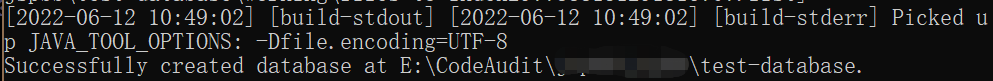

CodeQL使用流程
[toc]
# 前言
好久没用 CodeQL 了，看了自己之前写的文章发现竟然没有做过相关记录
然后就不知道怎么用了 hhh
# 使用流程
# 0x1 生成数据库
我们拿到一套源码，首先需要使用 CodeQL 生成数据库
执行命令：
codeql database create <database> --language=<language-identifier>
参数说明：
<database> ：创建数据库的路径，目录会在执行命令的时候被创建
--language : 指定数据库语言，输入标识符。当和–db-cluster 一起使用时，可以指定多个，用’,' 分隔，也可以进行多次指定。
--db-cluster ：为多种语言创建数据库
--command ：创建一个或多个编译语言数据库的时候使用。python 和 JavaScript/TypeScript 不需要该参数，如果编译语言不带该参数，codeql 会自动检测并编译
--no-run-unnecessary-builds ：为多语言创建数据库，且包括编译和非编译语言时，可以利用 --no-run-unnecessary-builds 来帮助非编译语言跳过 command 选项
更多参数说明
CodeQL 支持以下语言
| 语言 | 标识符 |
|---|---|
| C/C++ | cpp |
| C# | csharp |
| GO | go |
| Java | java |
| JavaScript/TypeScript | javascript |
| Python | python |
| Ruby | ruby |
案例：
1 | codeql database create xxx-database --language="java" --command="mvn clean install --file pom.xml" --source-root=文件目录 |
成功之后

然后在当前目录下会生成一个名为 “xxx-database” 的文件夹
# 0x2 导入 codeql 规则
这里使用‘starter workspace’，也就是 git 仓库
-
下载 starter
git clone --recursive https://github.com/github/vscode-codeql-starter/
或者
git clone https://github.com/github/vscode-codeql-starter/
项目下载完成后，进入项目目录
git submodule update --init
git submodule update --remote
确保包含需要的子模块
截图使用的是第一种方法

子模块需要定期更新
-
在 VS Code 中打开 starter workspace

注意：
starter 子模块中包括 C/C++, C#, Java, JavaScript, Python, Ruby 以及 GO 的规则，在 vscode-codeql-starter\ql 下
CodeQL 暂时无法扫描 php 代码
# 0x3 导入数据库
我们生成的数据库为文件夹，那我们就选择 “From a folder”
# 0x4 运行规则
点开项目文件，我们可以看见 ql 下有很多规则
因为示例源码为 java 语言，我们选择 java 下的规则文件夹
右键选择 "CodeQL:RunQueries in Selected Files"
里面有 81 个 CWE 规则
# 0x5 查看结果
点击左侧的一条规则，可以看到对应规则运行的结果在右侧